CS 180, Fall 2026
Two sets of photos shot in my neighbourhood, keeping the cameraman (myself) in place but rotating the phone between pictures.
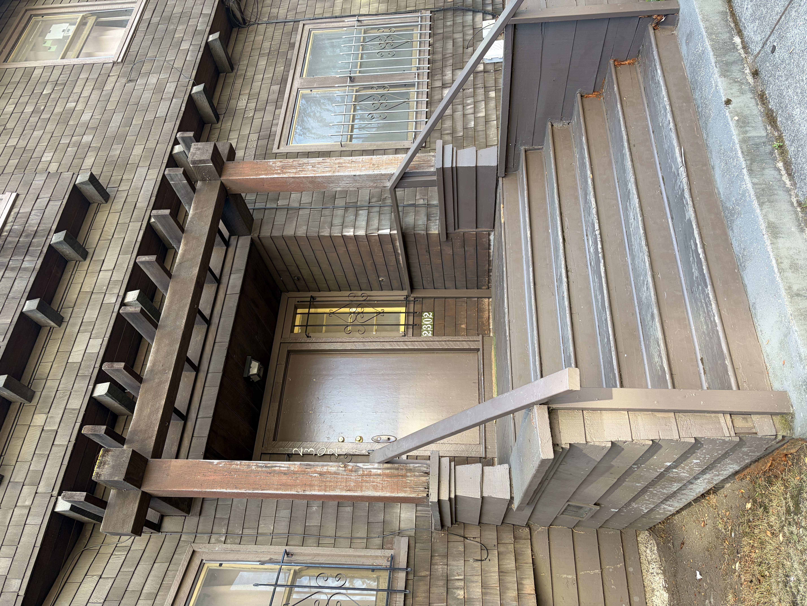
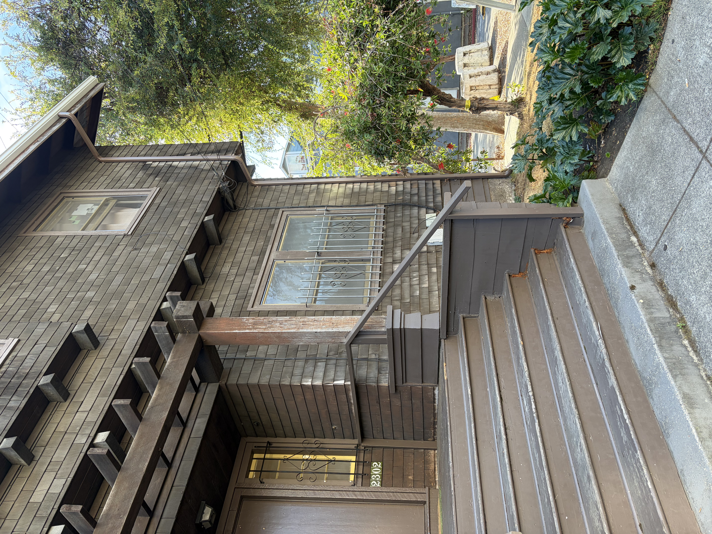
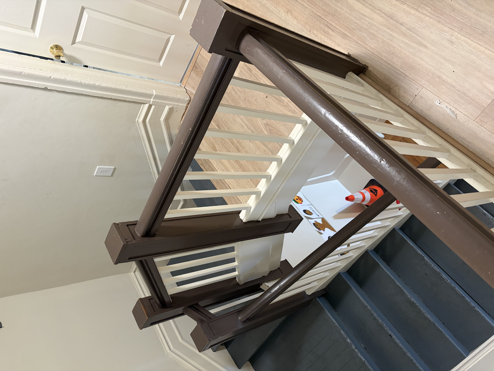
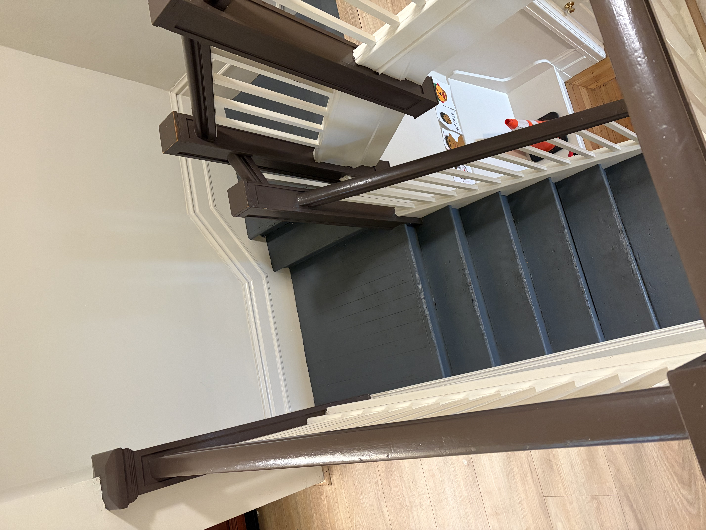
To align two images, we need to find a transformation that maps points in the first image to their corresponding locations in the second. We represent this transformation using a 3x3 homography matrix H:
$$ p' \sim Hp, \qquad H = \begin{bmatrix} h_1 & h_2 & h_3 \\ h_4 & h_5 & h_6 \\ h_7 & h_8 & 1 \end{bmatrix} $$
Here, $p = (x, y, 1)$ and $p' = (x', y', 1)$ represent matching points in the two images. The homography has 8 unknown parameters because multiplying the entire matrix by a constant does not change the resulting pixel coordinates, so we can set the bottom-right entry to 1.
To recover H, I manually selected 8 matching points in each image. Each point pair gives us two equations (one for x and one for y), resulting in 16 equations for 8 unknowns. I arranged these into a linear system $Ah = b$ and used least squares to find the homography that best fits the selected points.
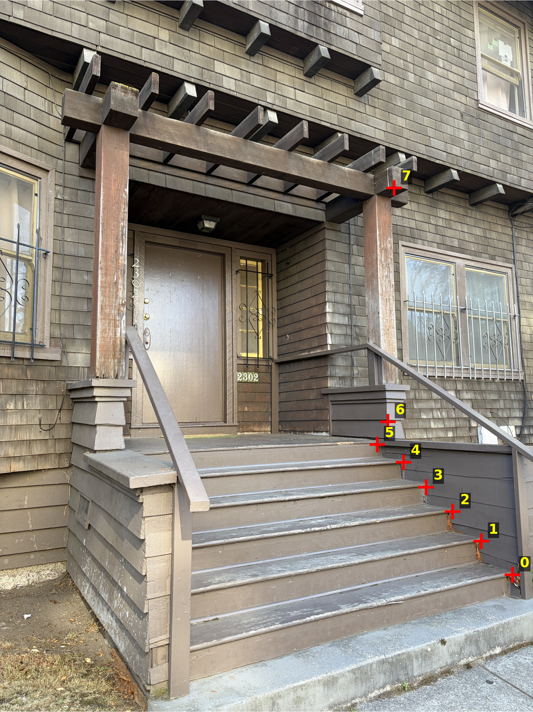
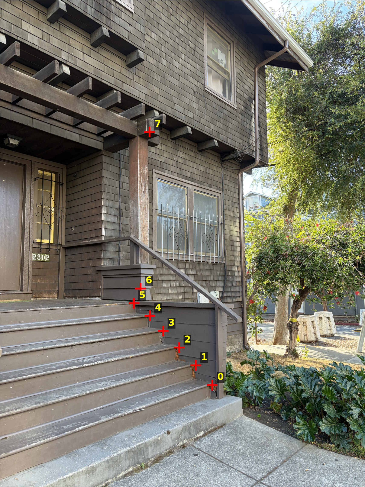
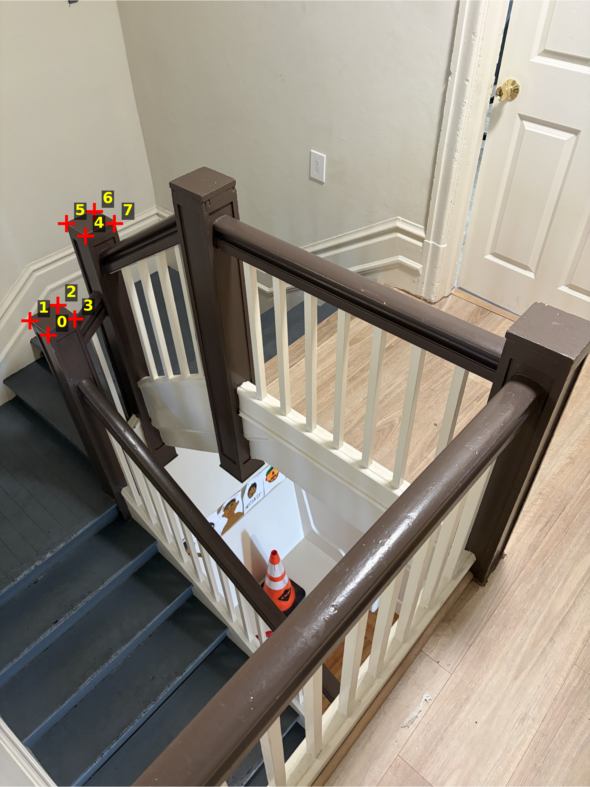
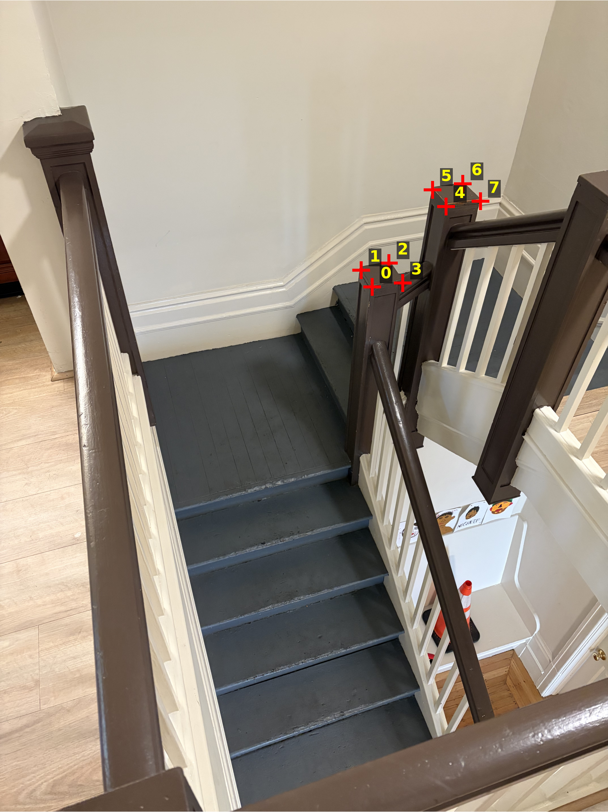
Solving the least-squares system for each set gives the following recovered homographies (mapping image 1 to image 2):
$$ H_1 = \begin{bmatrix} 1.29656 & -0.00917 & -1914.53 \\ 0.27585 & 1.27110 & -864.93 \\ 6.940 \times 10^{-5} & 1.551 \times 10^{-5} & 1 \end{bmatrix} $$
$$ H_2 = \begin{bmatrix} 0.24428 & -0.44148 & 3165.45 \\ -0.06263 & 0.68227 & 52.16 \\ -1.763 \times 10^{-4} & -4.323 \times 10^{-5} & 1 \end{bmatrix} $$
I implemented two image warping methods, nearest neighbor and bilinear interpolation. First, I use the homography to transform the four corners of the input image and determine the output bounds. Then, for each output pixel, I apply the inverse homography to find its corresponding location in the original image.
For nearest neighbor, I round to the closest source pixel and copy its color. For bilinear interpolation, I take a weighted average of the four surrounding pixels. Pixels that map outside the original image are left transparent using an alpha channel.
To test my warping implementation, I rectified a rectangular object in an image. I manually selected its four corners and mapped them to the corners of a rectangle with fixed dimensions. I then computed the homography and warped the image using both interpolation methods to compare their results.
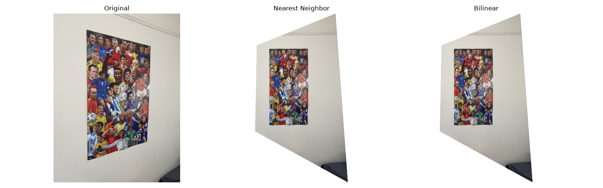
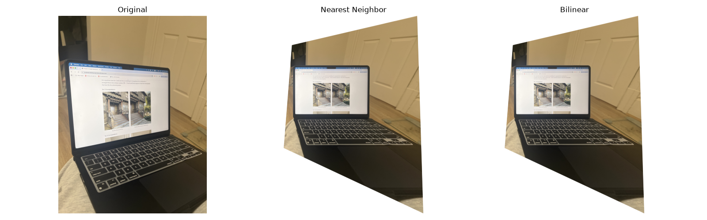
Both interpolation methods recover a convincingly rectangular poster and laptop screen. When zooming in a lot, the nearest-neighbor results show slightly more jagged edges while the bilinear results look slightly smoother due to the averaging of neighboring pixels. The difference is subtle at this resolution, but bilinear is the better default for photographic content.
On the other hand, bilinear interpolation requires reading and weighting four neighboring pixels per output pixel instead of one, which roughly doubles the runtime at these output resolutions (my warped outputs were on the order of 5000–8000 pixels per side):
| Image | Nearest Neighbor | Bilinear |
|---|---|---|
| Rect 1 (poster) | 3.766 s | 7.081 s |
| Rect 2 (laptop) | 2.596 s | 5.254 s |
So nearest neighbor is roughly 1.9–2x faster than bilinear, but for the final mosaics I still prefer bilinear since the quality gain outweighs the modest slowdown at this scale.
If you just paste one warped image on top of the other, you get an obvious seam wherever the exposure or alignment is slightly off. To avoid that, we can blend the two images together instead of picking one or the other at each pixel.
The solution I used was to give each image a confidence weight which starts at 1.0 in the center of the photo and linearly reduces to 0 near its edges. Intuitively, the edges of a photo are the least reliable part of a warp, so we want the final mosaic to rely mostly on the center of each image and only lean on the edges of one photo where the other photo doesn't cover that area at all.
I warp one image onto the other, then at every pixel I just take a weighted average of the two colors: $\text{mosaic} = \dfrac{w_1 \cdot \text{color}_1 + w_2 \cdot \text{color}_2}{w_1 + w_2}$. Where only one image covers a pixel, that image's weight dominates, and where both overlap, the colours blend from one photo to the other.
Below are the images and their mosaics. Set 1 and 3 are very smooth, but it's interesting how set 2's mosaic is especially stretched because of the large angle difference between the two original photos.
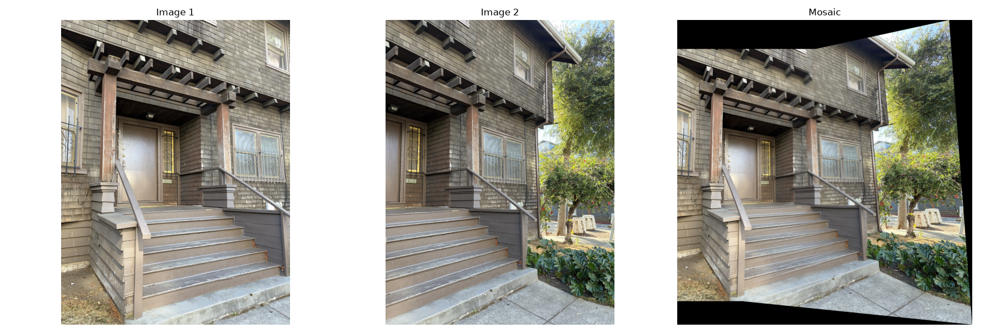
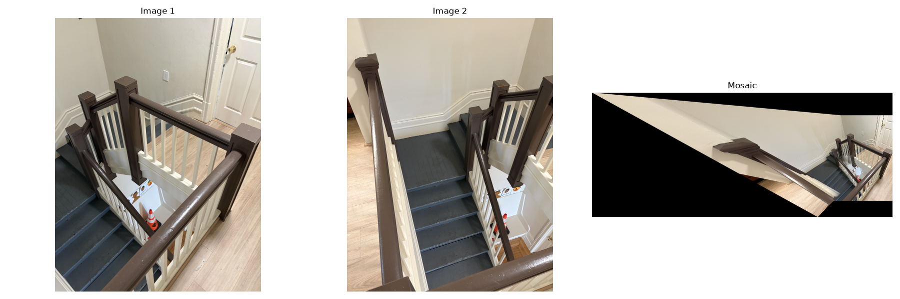
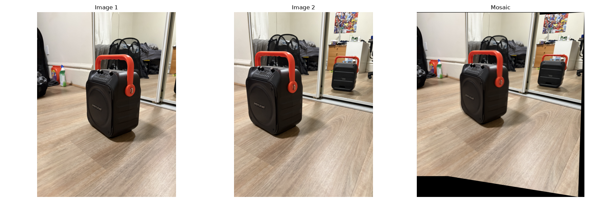